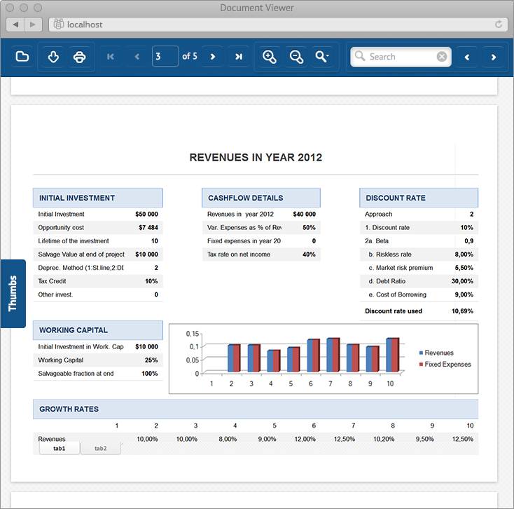

ASP.NET Document Viewer – Display PDF, Word, Excel & 50+ Other Types of Document
Introduction
All web-based document viewers designed as a middleware for displaying documents inside a browser can be conditionally divided into two groups: client middleware and client-server middleware.
Viewers from the first group (client middleware) perform document visualization on the client PC: they download documents from the server to the client-side and then display them in a browser. This group of document viewers are built using either a Java applet, Adobe Flash, Microsoft Silverlight or similar client-side technologies. This group has two main drawbacks:
1) The original document has to be downloaded to the client (which is potentially a significant security issue for your content).
2) 3rd party software has to be installed on the client side (e.g. browser plugins).
Document viewers from the second group (client-server) don’t have these drawbacks. They convert the original document to a set of HTML code, images, SVG, CSS and JavaScript on the server-side and then transmit this data to the client-side. As a result, end-users see the document in a browser as an ordinary HTML web-page. There is no need to install any third-party browser plugins.
GroupDocs.Viewer for .NET is a document viewer that belongs to this second group. It can be integrated into any website to display 50+ document types (including PDF and Microsoft Office), viewable on any web-enabled device. If a device has a web-browser that supports HTML, then it can properly display documents rendered by GroupDocs.Viewer.
In order to achieve maximum performance on the client-side, by default, GroupDocs.Viewer doesn’t send all the document’s content to the browser when the document is opened. Thanks to support for streaming, the viewer asynchronously transmits only those pages and parts of the document that are requested by the client. Of course, this behavior can be adjusted or changed using various options.
Requirements
Before you proceed, please note that this sample is built based on the commercial library – GroupDocs.Viewer for .NET. In order to use the sample, please download a free evaluation copy of the library from this page. Also, if you’d like to test the viewer without any evaluation restrictions, please contact GroupDocs support for a free 30-day license.
As already mentioned, the only requirement for the client-side is a web-browser that supports HTML, CSS and JavaScript. These could be IE, Chrome, FireFox, Safari, Opera and their mobile versions.
Server-side is a bit more complicated. As the name suggests, GroupDocs.Viewer for .NET is a .NET assembly, meaning it requires a .NET Framework version 4.0 or higher. It also requires ASP.NET WebForms or ASP.NET MVC version 3 or higher.
Because of its .NET nature, GroupDocs.Viewer requires a “.NET-compatible” web-server: IIS, IIS Express or ASP.NET Development Server (Cassini).
And what about hardware requirements? GroupDocs.Viewer doesn’t have any. If a machine is able to run ASP.NET web-sites on the IIS, then it is also able to run the viewer. However, displaying large documents is a quite heavy computational task that requires a fast CPU and a lot of memory. So the document rendering speed depends on the hardware specification of the server.
Running the sample
Nothing beats seeing it with your own eyes. Before starting with the project, please download the GroupDocs.Viewer for .NET library from this page. Then download and open this sample in Microsoft Visual Studio 2012 or higher. The sample contains a single project. Place the downloaded GroupDocs.Viewer for .NET library (GroupDocs.Viewer.dll) into the “GroupDocsViewerWebFormsSample\libs” folder. Now, compile and run the project. Once this is done, you will see a start page (Default.aspx) with a set of documents in your browser.
The sample project contains a sort of a fake repository (the FileRepository class) that returns a list of all available documents. In fact, it simply browses an “App_Data” folder and returns all files located there. You can see these files on the main page. “App_Data” already contains two sample files - “candy.pdf” and “Sample_2SpreadSheet.xlsx”. You can add your own files there - they will be listed on the main page after it's reloaded.

When the Open link is clicked, a new web-page is opened with the GroupDocs.Viewer widget inside. On the screenshot below you can see the document “candy.pdf” opened in the HTML-based mode.

Now it’s time to discover the difference between the image-based and HTML-based document rendering modes.
Rendering modes in GroupDocs.Viewer for .NET
One of the most important and powerful features in GroupDocs.Viewer is the ability to display documents in two different rendering modes - image-based and HTML-based. Each of these modes has its own advantages and disadvantages, and can be used depending on your preferences.
The image-based document rendering mode, which was presented in GroupDocs.Viewer from the very first version, rasterizes each document page into an image and sends this to the client. If the original document has a text layer, the viewer parses the text saving its exact coordinates and then sends it to the client-side as well. Each chunk of text is placed on the page image using the coordinates. This mode renders the original document with 100% fidelity, but has the following drawbacks:
- First of all, the textual layer is placed over the image using client-side JavaScript and thus it is not perceived as a native text by the browser. Of course, end users can still select and copy text to the clipboard, but browser-based search tools (Ctrl+F) won't work. To deal with this issue, GroupDocs.Viewer has an in-built search panel that can be used to search for text within the document using keywords.
- Secondly, the image-based mode presents pages as images. But what if the original document has no pages at all? For example, a plain large Microsoft Excel sheet, Outlook message, TXT, CSV, HTML files or AutoCAD drawings, etc. In this case the viewer splits such documents into pages forcibly, which can make it hard for end users to read through and review the entire document.
- Finally, the image-based mode may be heavy in terms of memory and bandwidth requirements. If a document is quite large and has lots of pages, the viewer may require a lot of RAM and disk space to store and render rasterized pages.
Due to these disadvantages, a new HTML-based mode was introduced in GroupDocs.Viewer 2.0. In this mode, the original document is converted to native HTML markup on the client-side. As a result, end users can leverage most of the browser features when viewing documents, such as native text search, copy/paste, and so on.
Naturally, documents converted to HTML are much smaller than the same documents rasterized to images. The document layout is represented as lightweight scalable SVG vector graphics as opposed to heavy raster images. Unfortunately, some older browsers (for example Internet Explorer 8 and earlier) don’t support SVG. In order to deal with this issue, GroupDocs.Viewer has an option to replace all SVG graphics with PNG images.
To illustrate the difference between the two document rendering modes, please see the screenshots below. These are the same document - “Sample_2SpreadSheet.xlsx” - you can find it in the “App_Data” folder. Note that the Excel file has two sheets.

On the screenshot above, the example Excel document is displayed in the image-based mode. It is split into a set of pages. Please note that the content from both sheets is placed one after another, sequentially.

The same XLSX document, but rendered in the HTML-based mode. As you can see, the document is not split into several pages, but displayed as is. Also please note a tabbed navigation bar appeared in the bottom of the document, allowing users to switch between the sheets.
Project overview
This section contains a brief overview of the sample itself. As mentioned above, it is a simple ASP.NET WebForms project that uses .NET Framework 4.0.
GroupDocs.Viewer sends a lot of asynchronous requests to stream documents from the server. In the web.config file you'll find all the necessary HTTP-handlers. If you are using ASP.NET MVC, there is no need to specify all these HTTP-handlers - you can simply invoke the Groupdocs.Web.UI.Viewer.InitRoutes() method that does the same thing.
In the Application_Start method in the Global.asax file, a root storage path is specified. This is absolutely necessary for the GroupDocs.Viewer. You can also set a log file path and specify a license file if you have one. Without the license GroupDocs.Viewer operates in a trial mode.
The FileRepository class returns a list of all files located in the “App_Data” folder. If you’ll upload your own files there, the FileRepository class returns them too.
The Default.aspx page, as described before, simply displays a list of all documents and allows you to view them. The Viewer.aspx page is the most interesting, as it contains the GroupDocs.Viewer widget on the code-front.
In the HEAD block, there is an inclusion of all the necessary JavaScript/CSS libraries and scripts.
The GroupDocs.Viewer widget (<%= Viewer.ClientCode().TargetElementSelector("#viewer")…) is located in the BODY block. When the web-page is rendered, this widget is transformed to JavaScript code, which invokes GroupDocs.Viewer, creates a viewport and fills it with the document’s content.
Finally, at the end of the page there is a JS code responsible for the dynamic resizing of the GroupDocs.Viewer viewport.
Final notes
This sample project gives you a basic idea of how GroupDocs.Viewer for .NET can be used to build an ASP.NET document viewer capable of displaying all common business document formats. In fact, GroupDocs.Viewer has much more comprehensive functionality which allows you to seamlessly integrate it into projects of any complexity.
For more details on the viewer and to download a free trial, please visit the product’s official webpage at:
http://groupdocs.com/dot-net/document-viewer-library
Thank you for your attention!